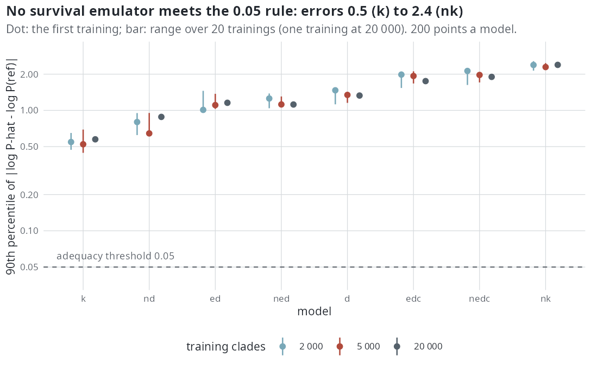

E43 — the conditioning factor: exact where possible, an emulator validated elsewhere
| Status | complete (2026-10-20). The rule is read: no emulator is adequate for any of the eight lineage-level models at 2000, 5000 or 20 000 training clades, so their conditioned fits use a direct Monte Carlo estimate of \(P(S)\); cr and dd use the exact functions, which the Monte Carlo reference matches |
| Package build | emphasis e1c2e82 (with the D fix 4e0b9dd) |
| Driver / analysis | sim/E43-calibrate.R, sim/E43-region.R, sim/E43-reference.R, sim/E43-emulate.R, sim/E43-analysis.R, sim/survival-exact.R |
| Data | results/E43/: analysis.txt, summary.csv (one row per model and training size), reference.csv (one row per point), reference-check.csv (cr/dd against the exact value), emulator.csv (one row per training and point), calibration.csv, calibration-scales.csv, cost-survey.csv |
Question
The likelihood conditioned on survival needs \(P(S \mid \theta, T, \rho)\), the probability that both crown lineages leave a sampled descendant. It does not depend on the observed tree, so one function per model, crown age and sampling fraction serves every fit of a cell. Its accuracy was measured only for cr and dd over the whole box (E36c), and its variability between trainings never. Steps 0.3 and 0.4 of the estimability plan.
Design
(a) Generators for the estimability study, calibrated so the median size of surviving trees equals each target (50, 100, 200, 400), no size window: ten models, turnover 0.10 and 0.40, effects \(\pm 0.35\), crown age 15, \(\rho = 1\). (b) Per model, a box spanning the calibrated generating values, widened; 200 points in it by Latin hypercube. (c) At each point \(P(S)\) by direct simulation (a clade reaching the lineage cap of 2000 counts as surviving), in chunks of 2000 clades; for cr and dd also the exact value. (d) The package's survival GAM for each of the eight lineage-level models, trained on 2000, 5000 and 20 000 clades drawn over the box (capped clades counted as survived), retrained with 20 seeds at 2000 and 5000 clades and once at 20 000 (328 trainings).
Pre-set rule
An emulator is adequate if, at the 200 points, the 90th percentile of \(|\log\hat P - \log P_{ref}|\) is at most 0.05 and the median retraining standard deviation of \(\log\hat P\) at most 0.02; the smallest adequate size is used in E45 and E46; if 20 000 clades do not suffice, the conditioned fits of that model use a direct Monte Carlo estimate of \(P(S)\). cr and dd use exact functions. Amendment before any reference run: a point's reference stops once the standard error of its \(\log P\) is at most 0.01 (2000 to 20 000 clades), because 20 000 clades everywhere would take six days, mostly at points with \(P \approx 1\).
Results
Calibration. Targets some generators cannot reach: dd, nd, nedc +0.35 at turnover 0.40 and 400 tips (the \(N\) models keep \(\lambda_0 = 0.5\) and stop at 250-290 tips); ned -0.35 at turnover 0.40, and at 0.10 and 400 tips; nk -0.35 from 100 tips at 0.10 and at every size at 0.40; k -0.35 at 0.40 (at most 14 tips). The exact survival functions match simulation of \(10^5\) clades: cr \(\log P\) -1.7222 against -1.7252 (SE 0.0068), dd -1.9920 against -1.9993 (SE 0.0080). The dd function was later reduced exactly to a chain on \(N\) alone (100-1000 times faster; E45).
The reference against the exact value (cr, dd). At the points with an exact value, the error of the Monte Carlo \(\log P\):
| model | points | median error | 90th percentile | share with \(\lvert z \rvert > 2\) |
|---|---|---|---|---|
cr |
200 | 0.0070 | 0.035 | 0.030 |
dd |
152 | 0.0079 | 0.079 | 0.092 |
The dd exact value is the midpoint of a truncation bracket; at 48 of the 200 points it was not computed, and at 5 of the 152 the bracket is wider than 0.5 (up to 0.95); those 5 carry errors of 0.59 to 0.71. Without them the dd median error is 0.0078 and the 90th percentile 0.049 (147 points). The mean and spread of \(z\) are not read: at points where every clade survived the binomial standard error is 0.
The emulators against the reference. The 90th percentile of \(|\log\hat P - \log P_{ref}|\) for the first training, its median and range over the trainings, and the median retraining standard deviation of \(\log\hat P\) (rule: at most 0.05 and 0.02). Points whose reference is \(P = 0\) (1 to 25 a model) have no \(\log P\) and are left out.
| model | clades | trainings | 90th pct, first | median over trainings | range | retraining SD | adequate |
|---|---|---|---|---|---|---|---|
d |
2000 | 20 | 1.47 | 1.27 | 1.12-1.48 | 0.068 | no |
d |
5000 | 20 | 1.34 | 1.28 | 1.16-1.39 | 0.055 | no |
d |
20 000 | 1 | 1.33 | no | |||
nd |
2000 | 20 | 0.80 | 0.80 | 0.62-0.95 | 0.084 | no |
nd |
5000 | 20 | 0.64 | 0.72 | 0.63-0.95 | 0.059 | no |
nd |
20 000 | 1 | 0.88 | no | |||
ed |
2000 | 20 | 1.01 | 1.13 | 1.01-1.45 | 0.095 | no |
ed |
5000 | 20 | 1.11 | 1.15 | 1.03-1.37 | 0.067 | no |
ed |
20 000 | 1 | 1.16 | no | |||
edc |
2000 | 20 | 1.98 | 1.82 | 1.54-2.10 | 0.077 | no |
edc |
5000 | 20 | 1.93 | 1.82 | 1.67-2.11 | 0.055 | no |
edc |
20 000 | 1 | 1.75 | no | |||
ned |
2000 | 20 | 1.26 | 1.23 | 1.04-1.38 | 0.090 | no |
ned |
5000 | 20 | 1.12 | 1.19 | 1.12-1.31 | 0.059 | no |
ned |
20 000 | 1 | 1.12 | no | |||
nedc |
2000 | 20 | 2.13 | 1.82 | 1.63-2.13 | 0.109 | no |
nedc |
5000 | 20 | 1.97 | 1.90 | 1.71-2.03 | 0.070 | no |
nedc |
20 000 | 1 | 1.90 | no | |||
k |
2000 | 20 | 0.55 | 0.55 | 0.47-0.65 | 0.048 | no |
k |
5000 | 20 | 0.52 | 0.59 | 0.44-0.69 | 0.029 | no |
k |
20 000 | 1 | 0.58 | no | |||
nk |
2000 | 20 | 2.38 | 2.35 | 2.14-2.56 | 0.121 | no |
nk |
5000 | 20 | 2.29 | 2.34 | 2.22-2.47 | 0.080 | no |
nk |
20 000 | 1 | 2.39 | no |
Both halves of the rule fail in every row: the error is 9 to 51 times the threshold of 0.05, and the retraining standard deviation 1.4 to 6 times the threshold of 0.02. The error does not fall with the training size: from 2000 to 20 000 clades it moves from 1.47 to 1.33 for d and from 0.80 to 0.88 for nd, and lies within the range of the 20 trainings at 2000 for every model.

The reference's own precision and cost. 200 points a model, 2000 to 20 000 clades a point.
| model | median \(P\) | points with \(P = 0\) | median SE of \(\log P\) | 90th pct SE | share SE > 0.0167 | share of clades capped | seconds a point, median | 90th pct | hours, all points |
|---|---|---|---|---|---|---|---|---|---|
cr |
0.654 | 2 | 0.0094 | 0.058 | 0.187 | 0.106 | 0.6 | 1.4 | 0.04 |
dd |
0.618 | 0 | 0.0095 | 0.040 | 0.225 | 0.078 | 0.5 | 1.0 | 0.06 |
d |
0.617 | 5 | 0.0094 | 0.047 | 0.190 | 0.095 | 2.8 | 288 | 4.8 |
nd |
0.584 | 1 | 0.0095 | 0.036 | 0.201 | 0.080 | 1.8 | 214 | 10.9 |
ed |
0.655 | 25 | 0.0093 | 0.037 | 0.211 | 0.106 | 28.3 | 2600 | 45.5 |
edc |
0.594 | 6 | 0.0094 | 0.064 | 0.253 | 0.101 | 13.9 | 1391 | 28.0 |
ned |
0.620 | 5 | 0.0095 | 0.037 | 0.200 | 0.062 | 6.0 | 1757 | 171.6 |
nedc |
0.567 | 3 | 0.0096 | 0.055 | 0.259 | 0.059 | 6.2 | 990 | 104.4 |
k |
0.817 | 3 | 0.0083 | 0.027 | 0.127 | 0.141 | 28.6 | 421 | 8.9 |
nk |
0.483 | 9 | 0.0097 | 0.066 | 0.267 | 0.073 | 2.0 | 427 | 13.0 |
The median standard error is below 0.01 for every model; the 90th percentile (0.027 to 0.066) comes from points with small \(P\), where 20 000 clades do not reach 0.01 (34 to 75 points a model). The reference's standard error is a fifth of the rule's threshold or less at the median, and 50 to 270 times below the emulators' errors, so the emulators' failure is not reference noise. Seconds are elapsed time per point summed over its chunks (from reference.csv); the heavy tail comes from points where many clades run to the lineage cap.
Conclusion
Rule read: no emulator is adequate. For each of d, nd, ed, edc, ned, nedc, k and nk, neither 2000, 5000 nor 20 000 training clades meet either half of the rule, so by the pre-set rule each is conditioned with a direct Monte Carlo estimate of \(P(S)\) at the parameter value; cr and dd use the exact functions, against which the Monte Carlo reference agrees (median error 0.007 and 0.008 in \(\log P\)).
What it means: the conditioned likelihood of a lineage-level model needs a Monte Carlo estimate of \(P(S)\) at each parameter value the M-step visits. At the standard error of 0.01 used here, one estimate took a median of 2 to 29 seconds and a 90th percentile of 3.6 to 43 minutes of one core, depending on the model, and the M-step evaluates its objective at many parameter values per iteration; each value then also carries Monte Carlo noise of about 0.01 in \(\log P\). E46's design must set the precision of that estimate, its cost per fit, and how the M-step handles the noise. Within the emulator, 20 000 training clades are no closer than 2000, so a larger training set of the same design is not the remedy.
What it does not show: whether MCEM conditioned by a direct Monte Carlo estimate converges, what a fit then costs, or how the noise in \(P(S)\) moves the estimates (E46 measures these); the accuracy of the emulator outside these boxes, at \(\rho < 1\) or at other crown ages; or why the GAM fails.
Related
- Estimability: steps 0.3 and 0.4.
- E36: the emulator against the exact value for
cr/dd, and the label fix this design starts from. - E44: the complete-data likelihood checked for every model before conditioning.
- E45:
crandddconditioned with the exact functions. - E48: the refit of the
ndrung on the real trees, which waited for this run's host. - E46 (planned): the lineage-level models conditioned by direct Monte Carlo estimation of \(P(S)\).